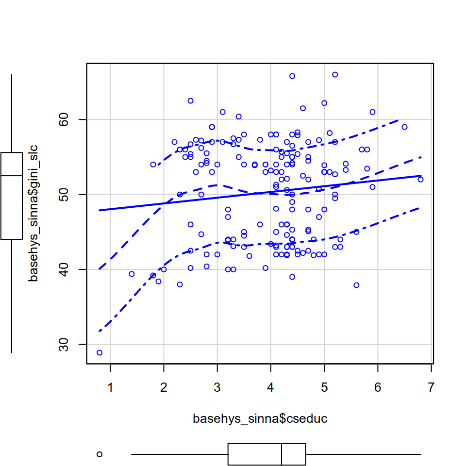
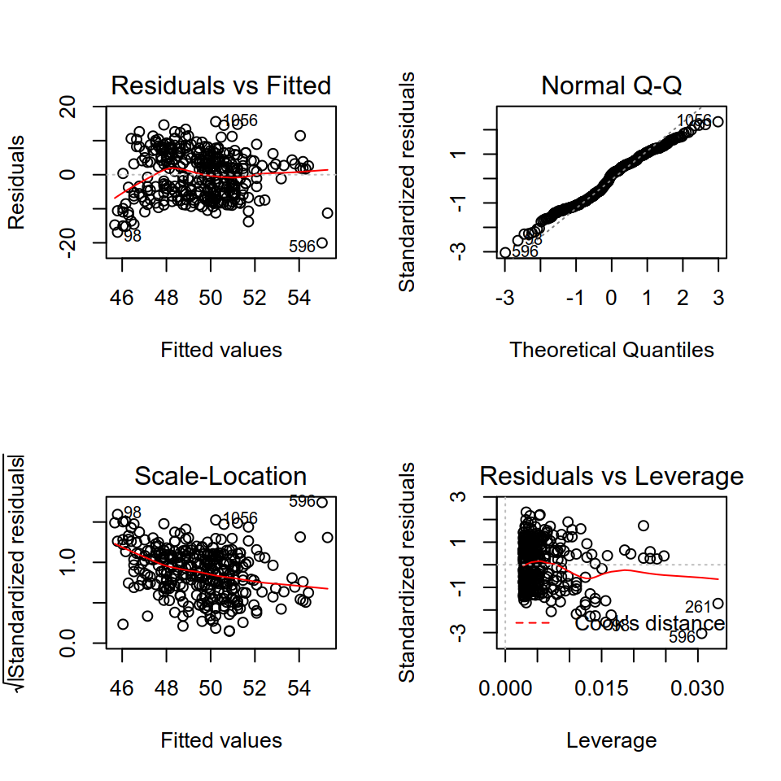
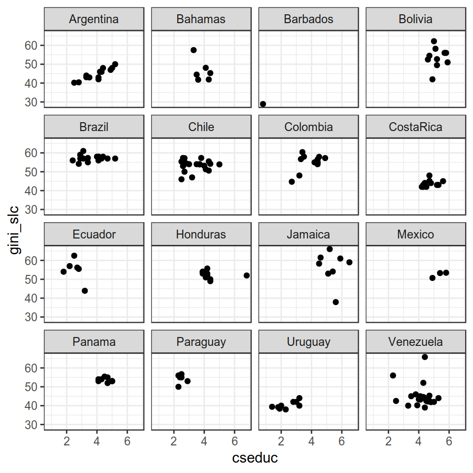
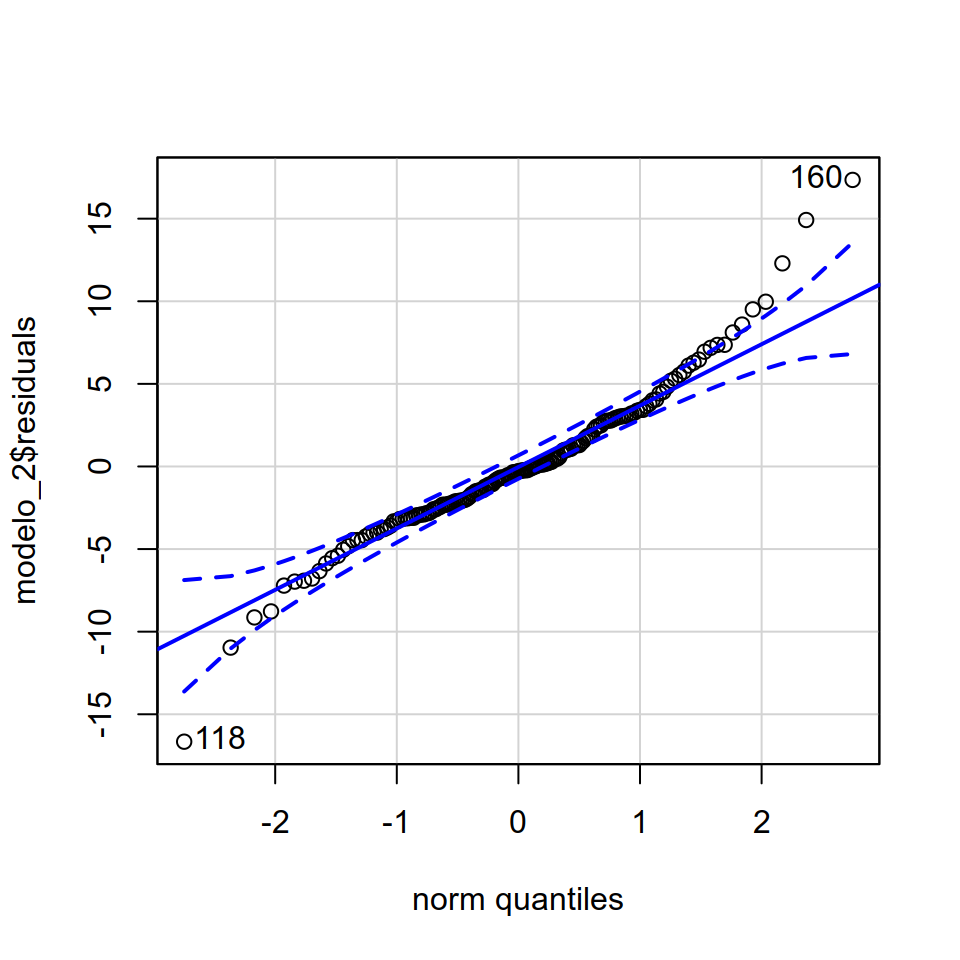

Capítulo 14 Supuestos de OLS:
El estimador de Mínimos Cuadrados Ordinarios será de utilidad (estimará insesgadamente el parámetro poblacional) si es que se cumplen los supuestos de Gauss-Markov que permiten que sea el Mejor Estimador Lineal Insesgado (MELI o BLUE por sus siglas en inglés). Para profundizar sobre los supuestos es recomendable consultar: Wooldrige,2006;Stock y Watson, 2012; Monogan III, 2015.
Por tanto, es importante evaluar que en nuestra estimación se estén cumpliendo estos supuestos. Como veremos a continuación, esta evaluación es teórica y, en algunos casos, se podrá aproximar empíricamente.
14.0.0.1 1. Media condicional cero
El supuesto central para utilizar el estimador de MCO. El postulado crucial de este supuesto es la independencia entre las variables indpendientes y el término de error, esto nos permite aislar de los factores no observables (contenidos en el término de error \(u\)) el efecto de las \(x\). Este supuesto no puede ser evaluado empíricamente porque, por definición, no conocemos los factores contenidos en el término de error. Por lo tanto, la defensa de este supuesto siempre será teórica.
14.0.0.2 2. Muestreo aleatorio
Este es un supuesto sobre la generación de los datos. Se asume un muestreo aleatorio de tamaño \(n\) que implica que la muestra fue tomada de forma tal que todas las unidades poblacionales tuvieron la misma probabilidad de ser seleccionadas. Es decir, no hay un sesgo de selección muestral.
14.0.0.3 3. Linealidad en los Parámetros
MCO asume que la variable dependiente (\(y\)) esta relacionada linealmente con la variable(s) independiente(s) y el término de error (\(u\)). Es decir, el aumento en una unidad de \(x\) implica un efecto constante en la variable dependiente \(y\). De aquí la forma funcional de la ecuación de regresión:
\[Y = \beta_0 + \beta_1x + u\]
Si la relación en realidad no es lineal, entonces estaremos ante un problema de especificación del modelo. Es decir, los valores predichos por nuestro modelo no se ajustarán a la realidad de nuestros datos y, en consecuencia, las estimaciones serán sesgadas. Por tanto, es clave evaluar si la relación que queremos estimar es lineal o si la forma funcional que caracteriza dicha relación es otra (por ejemplo, podría ser cuadrática, cúbica, logarítmica, etc).
La buena noticia es que si tenemos motivos teóricos y empíricos para creer que la relación no es lineal, es posible realizar transformaciones a nuestras variables para lograr una mejor especificación del modelo. Un clásico ejemplo refiere a la relación parabólica entre la edad y el salario: a medida que aumenta la edad aumenta el salario hasta que llega un punto de inflexión donde el aumento de la edad se relaciona con menores niveles de ingreso. En este caso lo recomnedable es realizar una transformación cuadrática a la variable edad para lograr una mejor especificación del modelo.
Para evaluar la linealidad realizamos un gráfico de dispersión de los valores predichos contra los residuos \(u\). Lo que se intenta es evaluar si el promedio de los residuos tiende a ubicarse de manera aleatoria por encima y debajo del cero. Si los residuos muestran un patrón creciente o decreciente - o de cualquier otro tipo - entonces la forma funcional de alguna de las variables en cuestión no es lineal.
Para esto utilizamos el comando plot:
plot(y=modelo_1$residuals,x=modelo_1$fitted.values,
xlab="Valores Predichos",ylab="Residuales")
abline(0, 0)
Además, podemos hacer un gráfico de residuales parciales (o de componentes), donde se grafican cada una de las variables independientes del modelo contra los residuos. El objetivo es obtener un gráfico “parcial” para observar la relación entre la(s) variable(s) independiente(s) y la variable dependiente dando cuenta (controlando) de las demás variables del modelo. Una línea punteada nos muestra la predicción de OLS, y otra línea (rosada) nos muestra la relación “real”. Si observamos que alguna de nuestras variables no tiene una relación lineal podemos realizar transformaciones (a las variables!) para que la forma funcional se acerque a la empiria. Cabe destacar que, además de la justificación empírica, esta transformación lineal siempre debe ir acompañada de un argumento teórico de por qué la relación entre las dos variables toma esa forma.

La relación de nuestra variable de interés con la variable dependiente parece ser cuadrática creciente. Por tanto, podría ser razonable realizar una transformación cuadrática a la variable. Evaluemos esto gráficamente:
basehys_sinna$cseduc2 <- basehys_sinna$cseduc*basehys_sinna$cseduc
modelo_1_tl<- lm(gini_slc~1 + cseduc2 + cseduc, data=basehys_sinna)
library(car)
crPlots(modelo_1_tl)
A partir de un diagnostico visual, se observa una tendencia creciente en los residuos a medida que se avanza en los valores predichos. Además, se detectó una relación no lineal entre el gasto en educación y los niveles de desigualdad. La sospecha es que esta relación pueda ser cuadrática (parábola cuadrática creciente) y, de acuerdo al gráfico de residuales parciales parece ser que la variable transformada se acerca bastante más a la relación lineal que estima MCO (marcada por la línea punteada).
Para confirmar las observaciones visuales, se suele utilizar un test estadístico para diagnosticar una mala especificación funcional del modelo: RESET Test de Ramsey. La idea es justamente evaluar si es que existe un error de especificación de la ecuación de regresión. Este test lo que hace es volver a estimar el modelo pero incorporando los valores predichos del modelo original con alguna transformación no lineal de las variables. Luego, a partir de un Test-F se evalúa si el modelo con la especificación no lineal tiene un mejor ajuste que el modelo original sin la transformación no lineal. La hipótesis nula postula que las nuevas variables (en este caso cseduc^2) no aportan significativamente para explicar la variación de la variable dependiente; es decir, que su coeficiente es igual a cero (\(\beta=0\)).
library(lmtest)
## Loading required package: zoo
##
## Attaching package: 'zoo'
## The following objects are masked from 'package:base':
##
## as.Date, as.Date.numeric
resettest(modelo_1, power=2, type=c("fitted"), data=basehys_sinna)
##
## RESET test
##
## data: modelo_1
## RESET = 9, df1 = 1, df2 = 400, p-value = 0.004De acuerdo al resultado del Test F, confirmamos lo observado gráficamente: el incorporar un término cuadrático del gasto en educación mejora el ajuste de nuestra estimación. A esta conclusión llegamos observando el valor-p del test RESET de Ramsey: a un nivel de significancia estadística del 5%, se rechaza la hipótesis nula de que la incorporación del término cuadrático no mejora el ajuste del modelo.
- Nota: Esta evaluación se realizó para un modelo de regresión simple (bivariado). Pero bien puede realizarse exactamente lo mismo para modelos multivariados.
14.0.0.4 4. Variación en las variables independientes y no Colinealidad Perfecta
En primer lugar, es necesario que exista variación en la(s) variable(s) independiente(s). Si no tengo variación, la estimación de los coeficientes será indeterminada. Además, mayor variación en las variables independientes me permitirá realizar estimaciones más precisas.
Por otra parte, la no-colinealidad perfecta implica que las variables independientes no estén perfectamente correlacionadas linealmente. Es decir, si bien las variables independientes por lo general suelen tener alguna relación entre ellas, no queremos que midan prácticamente lo mismo! Eso lo evaluaremos con tests de multicolinealidad.
Problemas de la multicolinealidad:
A. Pérdida de eficiencia, pues sus errores estándar serán infinitos. Aún si la multicolinealidad es menos que perfecta los coeficientes de regresión poseen grandes errores estándar, lo que hace que no puedan ser estimados con gran precisión.
Repasemos la fórmula del error estándar de los coeficientes:
\[\hat{\sigma}{_\hat{\beta}{_1}} = \frac{\hat{\sigma}} {\sqrt{\sum(X_j – \bar{X})^2(1 - R^2_j)}}\]
\(\hat{\sigma}\) Es la varianza del término de error: \(\frac{\sum\hat{u}}{n-k-1}\)
\(\sum(X_j – \bar{X})^2\) Es la variabilidad de \(x_j\) (\(STCx_j\))
\(1 - R^2_j\) Es la porción de \(x_j\) que no es explicada por el resto de las x en el modelo (\(R^2_j\) indica la varianza de \(x_j\) que es explicada por el resto de las equis del modelo). Es por este término que la no colinealidad perfecta es tan importante!
B. Las estimaciones de los coeficientes pueden oscilar demasiado en función de qué otras variables independientes están en el modelo. En una estimación OLS la idea es que puedes cambiar el valor de una variable independiente y no de las otras (de esto se trata ceteris paribus). Sin embargo, cuando las variables independientes están correlacionadas, los cambios en una variable están asociados con los cambios en otra variable. Cuanto más fuerte es la correlación, más difícil es cambiar una variable sin cambiar otra. Se vuelve difícil para el modelo estimar la relación entre cada variable independiente y la variable dependiente manteniendo el resto constante porque las variables independientes tienden a cambiar simultáneamente.
Repasemos la fórmula del estimación del coeficiente en una regresión múltiple:
\[\hat{\beta_1} = \frac{\sum(\hat{r_{i1}}\hat{y_i})}{\sum(\hat{r^2_{i1}})}\]
Donde:
- \(\hat{r_{i1}}\) son los residuales de una regresión de \(x_1\) sobre el resto de las \(x\) en el modelo (osea la parte de \(x_1\) que no puede ser explicada - o que no está correlacionada - con el resto de las \(x\))
Por tanto, \(\hat{\beta_1}\) mide la relación muestral entre \(y\) y \(x_1\) luego de haber descontado los efectos parciales de \(x_2\), \(x_3\)…\(x_k\).
Para evaluar la multicolinealidad, un primer paso es observar la matriz de correlación de las variables de nuestro modelo (tal como hicimos en la etapa de analizar los estadísticos descriptivos):
variables <- c("gini_slc","cseduc","s_dualism","fdiingdp","rgdpch","pop014wdi","ethnicdicot","demrss","cshlth","csssw","legbal","repressauthor")
vind <- basehys[variables]
Hmisc::rcorr(as.matrix(vind))
## gini_slc cseduc s_dualism fdiingdp rgdpch pop014wdi
## ethnicdicot demrss cshlth csssw legbal repressauthor
## [ reached getOption("max.print") -- omitted 12 rows ]
##
## n
## gini_slc cseduc s_dualism fdiingdp rgdpch pop014wdi
## ethnicdicot demrss cshlth csssw legbal repressauthor
## [ reached getOption("max.print") -- omitted 12 rows ]
##
## P
## gini_slc cseduc s_dualism fdiingdp rgdpch pop014wdi
## ethnicdicot demrss cshlth csssw legbal repressauthor
## [ reached getOption("max.print") -- omitted 12 rows ]Vemos que algunas de nuestras variables están fuertemente correlacionadas!
De todos modos, para detecter multicolinealidad es necesario realizar un test de vif (variance inflation factors) porque ver correlación de a pares no nos ayuda a dilucidar si más de dos variables tienen una correlación lineal. Lo que nos dice este test vif es qué tanto se “agrandan” los errores de cada coeficiente en presencia de las demás variables (qué tanto se incrementa la varianza del error).
library(car)
vif(modelo_2)
## cseduc fdiingdp cshlth csssw pop014wdi s_dualism
## 1.8 1.5 1.7 4.8 5.0 1.2
## ethnicdicot rgdpch
## 1.9 2.4
## [ reached getOption("max.print") -- omitted 3 entries ]
sqrt(vif(modelo_2)) > 2
## cseduc fdiingdp cshlth csssw pop014wdi s_dualism
## FALSE FALSE FALSE TRUE TRUE FALSE
## ethnicdicot rgdpch
## FALSE FALSE
## [ reached getOption("max.print") -- omitted 3 entries ]Luego, realizo una consulta sobre si la raíz cuadrada de vif para cada variable es menor que 2 (raíz cuadrada porque lo que me interesa es el error estándar y no la varianza). Vif: debería ser menor a 2, si es mayor a dos quiere decir que la varianza es demasiado alta y por tanto hay problema de multicolinealidad.
De acuerdo a la consulta, parece ser que no tenemos un problema serio de multicolinealidad. Pero si lo tuvieramos, debríamos corregirla?
La necesidad de reducir la multicolinealidad depende de su gravedad y de cuál es el objetivo principal del modelo de regresión. Hay que tener en cuenta los siguientes tres puntos:
La gravedad de los problemas aumenta con el grado de multicolinealidad. Por lo tanto, si la multicolinealidad es moderada, es posible que no necesitemos resolverla.
La multicolinealidad afecta solo a las variables independientes específicas que están correlacionadas. Por lo tanto, si la multicolinealidad no está presente para las variables independientes de interés, es posible que no necesitemos resolverla.
La multicolinealidad afecta los coeficientes y los valores-p, y el error estándar, pero no influye directamente en los valores predichos del modelo, la precisión de estas predicciones y las estadísticas de bondad de ajuste. Si el objetivo principal es hacer predicciones, y no necesitamos comprender el papel de cada variable independiente, no necesitamos reducir la multicolinealidad.
Soluciones a la multicolinealidad
Remover una de las variables indpendientes que esté altamente correlacionada. Esto constituye un trade-off, y se tiene que justificar teóricamente por qué se mantiene una variable y no la otra, además de hacer evidente el alto grado de correlación.
Puedo combinar las variables que estén altamente correlacionadas, hacer un índice por ejemplo.
Realizar un análisis diseñado para variables altamente correlacionadas, como por ejemplo el análisis de componentes principales (ver capítulo Nro. ##).
- Hasta ahora hemos visto cuatro supuestos, que permiten derivar la insesgadez de los estimadores por MCO. Es decir, nos permiten confiar en que la esperanza de la estimación realizada a través de MCO será igual al promedio poblacional: \(E(\hat\beta)=\beta\)
El quinto supuesto tiene que ver con la eficiencia. Esto es, con la varianza del término de error de nuestra estimación.
14.0.0.5 5. Homocedasticidad
La varianza del término de error es constante. Es decir, dado cualquier valor de las variables explicativas, el error tiene la misma varianza:
\(Var(u\mid{x})=\sigma^2\), es decir \(Var(u)=\sigma^2\)
De este modo, la varianza del error no observable, \(u\), condicional sobre las variables explicativas, es constante.
Como mencionamos anteriormente, este supuesto no afecta la sesgadez del estimador (es decir, que la distribución muestral de nuestra estimación \(_\hat{\beta_1}\) esté centrada en \(\beta_1\)), sino su eficiencia (qué tanta dispersión hay en torno a la estimación \(_\hat{\beta_1}\) del parámetro \(\beta_1\)).
Este supuesto es central para poder calcular la varianza de los estimadores de MCO, y es el que permite que sea el estimador de mínima varianza entre los estimadores lineales insesgados.
Si evaluamos la fórmula del error estándar de los coeficientes, se hace evidente la necesidad del supuesto: \[\hat{\sigma}{_\hat{\beta}{_1}} = \frac{\hat{\sigma}} {\sqrt{\sum(X_j – \bar{X})^2(1 - R^2_j)}}\]
- \(\hat{\sigma}\) Es la varianza del término de error: \(\frac{\sum\hat{u}}{n-k-1}\)
Para poder aplicar esta fórmula, necesitamos que \({\sigma^2}\) sea constante!!
Cuando este supuesto no se cumple, es decir el término de error no se mantiene constante para distintos valores de \(x\), estamos ante un escenario de heterocedasticidad. Es bastante frecuente tener heterocedasticidad. La buena noticia es que esto no imposibilita la utilización del estimador OLS: hay una solución!
A. Evaluando el supuesto
Para la evaluación de este supuesto se suelen seguir dos pasos:
- Diagnóstico visual
Lo que buscamos es observar si los residuales (distancia entre los puntos y la línea de regresión) son constantes para distintos valores de equis.
En primer lugar, hacemos un simple diagrama de dispersión entre la variable independiente que nos interesa y la variable dependiente:

Otra manera de hacer lo mismo y donde es más evidente:

Parece ser que en los niveles más bajos de gasto en educación la variabilidad de los niveles de desigualdad es bastante más alta que a niveles más elevados de gasto en educación.
Podemos hacer un mejor diagnóstico visual si utilizamos el modelo estimado (y no solo la relación entre las dos variables) y graficamos los residuos.
Primero lo hacemos para el modelo bivariado:

Luego para el modelo multivariado:



Los dos gráficos que nos interesa analizar son los de la izquierda: donde se grafican los valores predichos y los residuos.
Recordemos que bajo el supuesto de homocedasticidad, como la \(Var(u\mid{x})=\sigma^2\) , entonces la \(Var(Y\mid{x})=\sigma^2\). En otras palabras, la varianza de los residuos de los valores predichos a partir de las equis debiera ser constante. Por tanto, si no hay absolutamente ninguna heterocedasticidad (osea si estamos ante un escenario de homocedasticidad), deberíamos ver una distribución de puntos completamente aleatoria e igual en todo el rango del eje X y una línea roja constante.
Sin embargo, claramente se observa que los residuos no son constantes para distintos valores de la variable de gasto en educación! Estamos frente a un caso de heterocedasticidad
- Podemos también evaluar cada una de las variables del modelo y, así, identificar para qué variables específicas hay heterocedasticidad. Nuevamente, lo que esperamos es que la línea azul coincida con la línea punteada (en cero).
car::residualPlots(modelo_2)
## Test stat Pr(>|Test stat|)
## cseduc -1.80 0.073 .
## fdiingdp -0.12 0.901
## [ reached getOption("max.print") -- omitted 10 rows ]
## ---
## Signif. codes: 0 '***' 0.001 '**' 0.01 '*' 0.05 '.' 0.1 ' ' 1

- Diagnóstico estadístico
En un segundo paso realizamos un diagnóstico estadístico. Hay distintas maneras de evaluar la homocedasticidad, pero hay el Test de Breusch-Pagan es el que se utiliza con más frecuencia.
La lógica que está por detrás de este test es la siguiente: se realiza una regresión donde la variable dependiente son los residuos al cuadrado, para evaluar si las variables independientes del modelo tienen relación con \(u\). Lo que se quiere encontrar es que ese efecto sea 0, porque si la varianza del error es constante, el error (residuos) no debería variar según los valores de las \(x's\). En definitiva, ¡no se quiere rechazar la hipótesis nula!
bptest(modelo_2,studentize=T)
##
## studentized Breusch-Pagan test
##
## data: modelo_2
## BP = 30, df = 10, p-value = 7e-04El resultado del test de Breusch-Pagan nos confirma que estamos ante un escenario de Heterocedasticidad. Como el p-value es menor a 0.05, se rechaza la hipótesis nula y, por tanto, estamos en un escenario de heterocedasticidad.
B. Soluciones a la Heterocedasticidad
Una vez que identificamos que tenemos heterocedasticidad, es necesario solucionarla.
- Una primera alternativa es corregir la forma funcional
Claramente podes estar ante el caso que la no constancia del término de error se deba a que la relación entre las variables no es lineal!
Para esto ya vimos posibles soluciones a la no linealidad.
- Muy frecuentemente sucede que la naturaleza empírica de la relación hace que el error no sea constante.
Sabemos que no podemos calcular los errores estándar de los estimadores como lo hacemos siempre en OLS: como la varianza del error no es constante es necesario modificar la forma en la que calculamos los errores!
Entonces, para poder hacer inferencia necesitamos ajustar la estimación del error de forma tal de hacer una estimación válida en presencia de heterocedasticidad de la forma desconocida. Esto es, aunque no sepa el tipo de heterocedasticidad que tengo, puedo mejorar mi precisión y, además, hacer inferencia estadística válida.
La fórmula habitual del error estándar del estimador es:
\[\hat{\sigma}{_\hat{\beta}{_1}} = \frac{\sum_{i=1}^{n}(x_{i}-\overline{x})^2\hat{\sigma}} {\sqrt{\sum(X_j – \bar{X})^2(1 - R^2_j)}}\]
Lo que pasa es que cuando tenemos homocedasticidad, lo que está en el nominador: \(\sum_{i=1}^{n}(x_{i}-\overline{x})^2\hat{\sigma}=\hat\sigma\)
Como ahora \(\hat{\sigma}\) ya no es constante, esa igualdad ya no se mantiene! Esto porque el valor que adquiere \(\hat{\sigma}\) si va a depender de los distintos valores de \(x\).
Además, recordemos que al estimar una regresión múltiple, en la estimación del error estándar es necesario descontar la variación de la \(x_1\) que es explicada por el resto de las \(x_k\) del modelo.
De este modo, en una regresión múltiple, un estimador válido de \(\hat{\sigma}{_\hat{\beta}{_1}}\) bajo heterocedasticidad, será:
\[\hat{\sigma}{_\hat{\beta}{_1}} = \frac{\sum_{i=1}^{n}r_{ij}^2\hat{u}^2}{\sqrt{\sum(X_j–\bar{X})^2(1 - R^2_j)}}\]
Donde:
- \(r_{ij}^2\) Representa los residuos cuadrados de la regresión del resto de las variables independientes sobre la variable independiente \(j\).
- Representa la Varianza Total de equis luego de haber descontado el efecto del resto de las equis.
A esta forma de estimar los errores estándar se la denomina “errores estándares robustos” o también le decimos “robustecer” el error, que no es otra cosa que dar cuenta y permitir la heterocedasticidad, volviendo los errores más exigentes.
14.1 Errores estándares robustos
Si bien hay varias formas de robustecer los errores (incluso se podría hacer a mano), R nos permite calcularlos muy fácilmente con el comando coeftest del paquete lmtest. Además, el paquete sandwich con su función vcovHC nos permite incorporar la especificación de la matriz de varianza-covarianza robusta.
- HC0 = es la original de White (Wooldrige,2006)
- HC1= Es la que utiliza el software de Stata
- HC3 = Es la más conservadora y, por tanto, se suele ser altamente recomendada.
library(lmtest)
library(sandwich)
modelo_robusto_3=coeftest(modelo_2, vcov = vcovHC(modelo_2, "HC3"))
modelo_robusto_1=coeftest(modelo_2, vcov = vcovHC(modelo_2, "HC1"))
modelo_robusto_0=coeftest(modelo_2, vcov = vcovHC(modelo_2, "HC0"))
stargazer::stargazer(modelo_robusto_3, modelo_robusto_1, modelo_robusto_0, type = "text")
##
## ==============================================
## Dependent variable:
## --------------------------------
##
## (1) (2) (3)
## ----------------------------------------------
## cseduc 1.600*** 1.600*** 1.600***
## (0.540) (0.500) (0.480)
##
## fdiingdp 0.240 0.240* 0.240*
## (0.150) (0.140) (0.140)
##
## cshlth -0.830*** -0.830*** -0.830***
## (0.240) (0.230) (0.220)
##
## csssw -0.830*** -0.830*** -0.830***
## (0.280) (0.260) (0.250)
##
## pop014wdi -0.930*** -0.930*** -0.930***
## (0.220) (0.210) (0.200)
##
## s_dualism -0.170*** -0.170*** -0.170***
## (0.034) (0.032) (0.031)
##
## ethnicdicot 3.700*** 3.700*** 3.700***
## (1.000) (0.950) (0.920)
##
## rgdpch -0.0004** -0.0004** -0.0004**
## (0.0002) (0.0002) (0.0002)
##
## demrss -2.100*** -2.100*** -2.100***
## (0.630) (0.590) (0.570)
##
## legbal -11.000*** -11.000*** -11.000***
## (2.500) (2.300) (2.200)
##
## repressauthor -1.300 -1.300 -1.300
## (1.800) (1.700) (1.600)
##
## Constant 89.000*** 89.000*** 89.000***
## (10.000) (9.400) (9.100)
##
## ==============================================
## ==============================================
## Note: *p<0.1; **p<0.05; ***p<0.01Todas las alternativas nos dan errores robustos similares. Las diferencias están dadas por distintas especificaciones sobre la matriz de varianza-covarianza robusta (HC).
14.1.1 Un caso especial de Heterocedasticidad: la varianza del error asociada a clusters
Sabemos que hay observaciones que pueden estar relacionadas entre sí dentro de determinados grupos (o clusters). Por ejemplo, los países de América Latina podrían estar relacionados por pertenecer a regiones similares (América del Sur versus América Central o Caribe, regiones Andinas versus no Andinas, etc). Así, sus errores podrían estar correlacionados en base a la región que pertenecen. Entonces, tengo que la varianza del error condicionada por región no es constante.
Cuando trabajamos con datos de panel, como es nuestro caso, esto es bastante más claro. Al contar con gasto en educación por país para varios años existe una auto-correlación del error entre observaciones de un mismo país. Es decir, los errores se encuentran correlacionados entre las observaciones de un mismo país para cada año (lo que se gasta en un año particular, probablemente esté relacionado con lo que se gastó en el año anterior).
Entonces, cuando mis observaciones pertenecen a clusters y tengo motivos teóricos para pensar que sus errores estarán correlacionados dentro del cluster, la corrección supondrá clusterizar los errores estándar: cluster standard errors.
Lo que estamos haciendo cuando clusterizamos los errores estándar es permitir que exista correlación del error dentro de los clusters (se relaja el supuesto de homocedasticidad). Así, permitimos que la varianza del error no sea constante, sino que sea diferente según los clusters.
La selección de cuáles son los clusters relevantes estará dada teóricamente. En nuestro caso, hace sentido pensar que los clusters son los países.
Recordemos que nuestro interés era estimar el el efecto del gasto en educación sobre el índice de Gini en países de América Latina. Observemos esta relación según región para evaluar si, a primera vista, parece haber clusterización:
library(ggplot2)
ggplot(basehys_sinna, aes(cseduc, gini_slc)) +
geom_point() +
facet_wrap(~country) +
theme_bw()
Parece ser que si existe cierta clusterización por país. Es deir, el gasto en educación por país suele mantenerse dentro de un rango que varía por país.
Cuando lo vemos así no queda tan claro porque son demasiados países, pero aún así pareciera haber cierta clusterización por país (las observaciones se agrupan por país; no parecen ser independientes).

Para realizar la estimación por MCO con el error clusterizado, utilizamos el comando lm.cluster del paquete miceadds. Este comando lo que hace es clusterizar los errores estándar según la variable de clusterización indicada. En definitiva, lo que estamos haciendo es permitir que exista correlación del error dentro de los clusters, en este caso países (relajando el supuesto de homocedasticidad).
Los errores estándar robustos por cluster pueden aumentar o disminuir los errores estándar. Es decir, los errores estándar clusterizados pueden ser más grandes o más pequeños que los errores estándar convencionales. La dirección en la que cambiarán los errores estándar depende del signo de la correlación del error intraclase.
#install.packages("miceadds")
modelo_2_cluster <- miceadds::lm.cluster( data=basehys_sinna, formula=gini_slc~1 + cseduc + s_dualism + fdiingdp+rgdpch+ethnicdicot+demrss+cshlth+csssw+legbal+repressauthor, cluster="country")
summary(modelo_2_cluster)
## R^2= 0.51
##
## Estimate Std. Error t value Pr(>|t|)
## (Intercept) 5.1e+01 3.96616 12.86 7.6e-38
## cseduc 1.2e+00 0.63271 1.88 6.0e-02
## [ reached getOption("max.print") -- omitted 9 rows ]14.2 Un supuesto adicional para poder realizar inferencia
Hasta aquí hemos repasado y evaluado empíricamente - en la medida de lo posible - los cinco supuestos del teorema de Gauss-Markov que aseguran que el estimador de MCO sea MELI (Mejor Estimador Lineal Insesgado).
Sin embargo, estos no son suficientes para poder realizar inferencia estadística! Para esto, debemos asumir un supuesto adicional:
14.2.0.1 6. Normalidad en la distribución del error
Como hemos visto anteriormente, para testear una hipótesis de significancia individual de un coeficiente estimado por MCO se utilizan los estadísticos \(t\) que permiten contrastar el valor \(t\) empírico contra un valor \(t\) teórico (llamado “valor crítico”) dado un nivel de significancia determinado (\(\alpha\)), comúnmente se utiliza un alpha del 5% (por esto se habla de significancia estadística al 95% de confianza).
Sin embargo, para poder realizar esta prueba de hipótesis y, así, hacer inferencia estadística, es necesario asumir que el coeficiente (\(\beta\)) sigue una distribución T-Student. Sólo así podemos realizar la prubea de hipótesis utilizando el estadístico \(t\).
El supuesto que permite esto es el de normalidad en la distribución del error. Como el estimador MCO (\(\beta\)) es una combinación lineal de los errores (\(Y = \beta_0 + \beta_1x + u\)), al asumir distribución normal del error (\(u\)) podemos asumir distribución normal del estimador MCO.
Sin embargo, como el error y su varianza son desconocidos, se estiman utilizando los residuos de la regresión (\(\hat{u}\)), obteniendo así el error estándar de la estimación. Sin embargo, las estimaciones implican una pérdida de grados de libertad (por cada parámetro estimado pierdo un grado de libertad: n-k-1, n=tamaño muestral, k=cantidad de parámetros estimados - variables del modelo-, 1=la estimación del intercepto, \(\beta_0\)) y, por tanto, la distribución del error estándar y, por tanto, del coeficiente, ya no distribuye normal sino T-Student (\(\hat\beta \sim t_{n-k-1}\)).
Los siguientes dos comandos nos permiten verificar que los residuos del modelo estimado a través de MCO siguen una distribución T-Student (aproximadamente normal).
- El comando
qqplotviene por default en R y genera un gráfico de probabilidad normal que muestra la distribución de los datos contra una distribución normal teórica esperada. Por tanto, lo que es importante mirar del gráfico es que las observaciones (que son los residuos) no se salgan de las líneas punteadas (que delimitan la distribución normal).

- El comando
ggpubrdel paqueteggpubrpermite construir gráficos de densidad. De este modo, puedo graficar los residuos para evaluar visualmente si siguen una distribución aproximadamente normal.
library(ggpubr)
## Loading required package: magrittr
##
## Attaching package: 'magrittr'
## The following object is masked from 'package:texreg':
##
## extract
## The following object is masked from 'package:purrr':
##
## set_names
## The following object is masked from 'package:tidyr':
##
## extract
ggdensity(modelo_2$residuals,
main = "Gráfico de Densidad de los Residuos")
Luego de la evaluación de los supuestos y buscar soluciones (cuando es necesario), podemos tener mayor confianza en nuestra estimación y la relación encontrada entre las variables. Aún así, una explicación completa de nuestro hallazgo implica profundizar en por qué y cómo se relacionan estas dos variables.